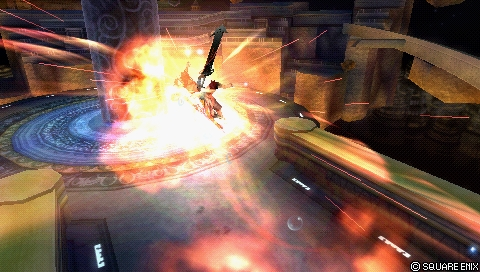
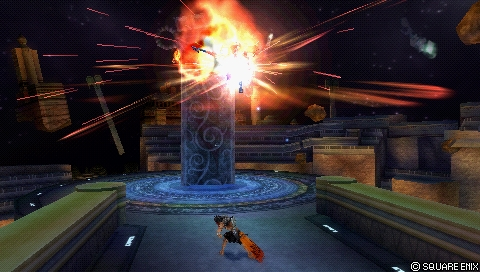
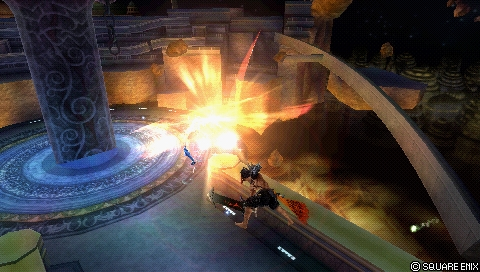
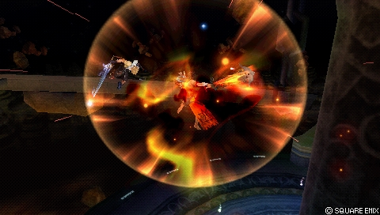
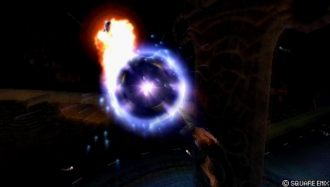

![Official portrait of Jecht in Dissidia 012 [duodecim]](../assets/portraits/jecht.png)
Final Fantasy X
Jecht
Close-range charged combos: heavy damage, 3-frame timings
Standing in the meta
Tier A+ 6th of 30 — 2017 tournament tier list from dissidia.wiki (half matchup values, half expert player votes).
Jecht is ranked 6th (tier A+) on the 2017 tier list. The overview recalls that he languished at the bottom of mid tier for a long time before being recognised as high tier, able to compete with most of the roster when his gameplan comes together.
Overview
Jecht is a short-range character with innate solo combos into his HP attacks, powerful mixups, relatively high damage and real Wall Rush potential. By charging an attack during its startup, he increases its damage and reach, delays its release and breaks normal blocks thanks to the high priority. On defence, his unique Jecht Block threatens fast pokes, covers his dodges, stops the assist gauge from decaying and guards against mid/high priority attacks from frame 1; even persistent projectiles give it no trouble. Add bravery attacks that cannot be reacted to and standard mobility: Jecht is dangerous to face up close.
His combo-centred game works with a wide range of assists: his high-knockback finishers and branching combo paths secure an assist combo even far from a wall. On the build side he is spoilt for choice: raw-damage bravery combos, high base bravery with devastating results, and his ability to end combos with an HP attack makes the Side by Side accessory extremely effective — often the trigger of his momentum. EX-oriented Center of the World builds exist too, despite the enormous drawback of giving up assists.
That reliance on complete combos comes at a price: missing one of the 3-frame windows deprives him of the finishers where he earns most of his damage and gauge depletion. His timings are stricter than average, which online latency makes worse. Cancels mid-combo are limited and, with no mid-range tools, contesting The Emperor's traps is very hard — notoriously one of his worst matchups. Jecht is also vulnerable to certain assist interruptions at the start of his combos, and has almost no way of avoiding the LV2 Assist Change stagger without a trade-off. His whiffs, aerial Jecht Stream in particular, are heavily committal; with a single offensive bravery attack on the ground and in the air, he has to take risks to keep winning. His gauge generation is below average without Jecht Beam endings or Side by Side, and EX offers diminishing returns (mediocre EX Burst, EX Revenge combos and EX Mode bonus).
Historically, Jecht was ranked at the bottom of mid tier before climbing back into high tier. His gameplan, fairly direct, thrives on momentum but suffers when he has to manage a disadvantage. Aerial poking is riskier than it is for other strong characters, but Jecht Block is a fantastic post-dodge defensive option and counters on LV2 Assist Change earn him a full combo. The strict timings are a barrier to entry for new players, and punishing fast fallers on dodge costs resources — but when everything lines up, Jecht competes with most of the roster.
Strengths
- Excellent close-range fighting: mobility, high-priority bravery attacks (charged) and utility moves to bend interactions his way.
- Enormous damage: very high ATK (112), bravery combo multipliers and HP finishers — a single combo starter is enough to deal heavy damage.
- Jecht Block guards high-priority attacks from frame 1: a rare and excellent post-dodge defensive option, very rewarding on a stagger.
- Fearsome dodge punish: good hitboxes and startup on his bravery attacks, with increased tracking during assist calls.
- Solo HP combos that carry the opponent all the way to the wall, for heavy damage and space control on small stages.
- Flexible assist synergy with Wall Rush potential and fast bravery follow-ups; some assists can even salvage his dropped combos.
- Works with a wide variety of builds — a famously strong Side by Side user, with Center of the World a possibility.
- Momentum: one good hit early in the match starts the engine; LV2 Assist Change staggers give a full combo, and Jecht Beam plus Jecht Block let him get around a final EX Revenge.
Weaknesses
- Limited moveset: predictable gameplan and effective range; his main aerial poke Jecht Stream has considerable recovery on whiff.
- Execution precision: his solo combos demand several 3-frame timings to deal any HP damage at all — vulnerable to human error and severely compromised by lag.
- Building gauge on whiff is hard: a single offensive bravery attack on the ground and in the air, and most of the gain comes from HP finishers.
- Weak EX economy: reliance on Jecht Beam and EX Cores, a slightly below-average EX Burst, and a Full Combo bonus that is often situational.
- Weakened presence without an assist: far less of a threat at long range or without gauge, and it is hard for him to claw back a resource deficit.
- Unblockable area denial: Black Hole gets around Jecht Block, and The Emperor's traps reduce his approaches and pokes to telegraphed HP attacks and the assist.
Stats & speeds
| Name | Jecht (ジェクト) |
|---|---|
| Original game | Final Fantasy X |
| Base ATK (LV100) | 112 (Very High) |
| Base DEF (LV100) | 111 (Average) |
| Run Speed | 5 (Above Avg.) |
| Dash Speed | 77 (Average / Good) |
| Fall Speed | 81 (Average) |
| Fall Speed Ratio After Dodge | 39 (Average) |
| Fastest BRV | 1F (Jecht Block) 13F (Jecht Rush) |
| Fastest HP | 31F (Jecht Beam / Ultimate Jecht Shot) |
| 1-Hit HP | Yes (Jecht Beam) |
| HP Links | Yes (Combo chains) |
| Command Block | Yes (Jecht Block) |
| Weapon | Axes Grappling Weapons Greatswords Thrown Weapons |
| Armor | Bangles Chestplates Clothing Hats Headbands Helms Light Armor Shields |
| Exclusive weapons | Kaiser Knuckles Sin's Talon Sin's Fang |
| Unlock | PP Catalog DFF save import |
| Alignment | Cosmos (012)Chaos (013) |
| Voice Actor (JP) | Masuo Amada |
| Voice Actor (ENG) | Gregg Berger |
Gold dot: this character · small dots: the rest of the cast · violet line: average. Wiki values, lower = faster; the rank on the right reads directly (1st = fastest).
Moves
Shorter bar = faster move. Startup in frames (60 fps, dissidia.wiki data), with priority after the value. Moves marked ★ are the fastest in the kit — usually your best punish and pressure tools.
Bravery attacks
Ground
Jecht Rush
| Version | Damage multiplier | Startup frame | Type | Priority | EX Force | Effects | CP (mastered) |
|---|---|---|---|---|---|---|---|
| Level 1 | 4, [5] (4, 5) | 13F | Physical | Melee Low | 9, [60] | - | 60 (30) |
| Level 2 | 5, 5, [5] (10, 5) | 18F (charge), 5F (release) | Physical | Melee Low | 12, [60] | - | |
| Level 3 | 3 x 5, [5] (15, 5) | 34F (charge), 5F (release) | Physical | Melee High | 15, [60] | Wall Rush |
Level 1 Melee Low
| Base damage | 4, [5] (4, 5) |
|---|---|
| Startup | 13F |
| Type | Physical |
| Priority | Melee Low |
| EX Force | 9, [60] |
| Cancels | Dodge, Block, Attack |
| CP (mastered) | 60 (30) |
Level 2 Melee Low
| Base damage | 5, 5, [5] (10, 5) |
|---|---|
| Startup | 18F (charge), 5F (release) |
| Type | Physical |
| Priority | Melee Low |
| EX Force | 12, [60] |
| Effects | -- |
| Cancels | Dodge, Block, Attack |
Level 3 Melee High
| Base damage | 3 x 5, [5] (15, 5) |
|---|---|
| Startup | 34F (charge), 5F (release) |
| Type | Physical |
| Priority | Melee High |
| EX Force | 15, [60] |
| Effects | Wall Rush |
| Cancels | Dodge, Block, Attack |
Jecht Block (ground)
| Block Frames | End Frames | Dodge Cancel Frames | Priority |
|---|---|---|---|
| 1-16F | 80F | Jecht Block | |
| CP (Mastered) | Cancels | Assist Gain (Attack) | Assist Gain (Hit) |
| 30 (15) | Dodge (Whiff)Anything (Block) | 0 | 0 |
| Unlocked at level | Mastered at 100 AP | [Block] Stops blows with powerful backhand. Does not deal damage. |
| Priority | Result |
|---|---|
| Melee Low & Mid | Wins (Staggers the opponent) |
| Melee High | Tie (Both characters stagger) |
| Ranged Low, Mid & High | Wins (Reflect / deflect) |
| Special & Unblockable | Loses |
Aerial
Jecht Stream
| Version | Damage multiplier | Startup frame | Type | Priority | EX Force | Effects | CP (mastered) |
|---|---|---|---|---|---|---|---|
| Level 1 | 2, 2, [5] (4, 5) | 17F | Physical | Melee Low | 9, [60] | - | 60 (30) |
| Level 2 | 2, 2, 1, 1, [5] (6, 5) | 18F charge, 11F release | Physical | Melee Low | 12, [60] | - | |
| Level 3 | 1 x 8, [5] (8, 5) | 34F (charge), 11F (release) | Physical | Melee High | 12 | Wall Rush |
Level 1 Melee Low
| Base damage | 2, 2, [5] (4, 5) |
|---|---|
| Startup | 17F |
| Type | Physical |
| Priority | Melee Low |
| EX Force | 9, [60] |
| Effects | -- |
| Cancels | Dodge, Block, Attack |
| CP (mastered) | 60 (30) |
Level 2 Melee Low
| Base damage | 2, 2, 1, 1, [5] (6, 5) |
|---|---|
| Startup | 18F charge, 11F release |
| Type | Physical |
| Priority | Melee Low |
| EX Force | 12, [60] |
| Effects | -- |
| Cancels | Dodge, Block, Attack |
Level 3 Melee High
| Base damage | 1 x 8, [5] (8, 5) |
|---|---|
| Startup | 34F (charge), 11F (release) |
| Type | Physical |
| Priority | Melee High |
| EX Force | 12 |
| Effects | Wall Rush |
| Cancels | Dodge, Block, Attack |
Jecht Block (midair)
| Block Frames | End Frames | Dodge Cancel Frames | Priority |
|---|---|---|---|
| 1-16F | 74F | Jecht Block | |
| CP (Mastered) | Cancels | Assist Gain (Attack) | Assist Gain (Hit) |
| 30 (15) | Dodge (Whiff)Anything (Block) | 0 | 0 |
| Unlocked at level | Mastered at 100 AP | [Block] Stops blows with powerful backhand. Does not deal damage. |
| Version | Damage multiplier | Startup frame | Type | Priority | EX Force | Effects | CP (mastered) |
|---|---|---|---|---|---|---|---|
| Ground (Neutral) | 1x9, [12] (+9, 12) | ?? | Physical | Melee Low | 9, [60] | Chase | - |
| Ground (Up) | 1x5,2, [12] (+7, 12) | ?? | Physical | Melee Low | 9, [60] | Chase | |
| Air (Neutral) | 1x4, 3, [12] (+7, 12) | ?? | Physical | Melee Low | 9, [60] | Chase |
Ground (Neutral) Melee Low
| Base damage | 1x9, [12] (+9, 12) |
|---|---|
| Type | Physical |
| Priority | Melee Low |
| EX Force | 9, [60] |
| Effects | Chase |
| Cancels | Dodge (recovery) |
Ground (Up) Melee Low
Jecht Rush's Up 3: a sword thrown upwards in a spin, capped by a rising slash — a finisher with upward knockback that can Wall Rush. It is the only way to combo into Ultimate Jecht Shot, and the reward is worth the effort, with a 5 frame window to place the HP attack on the last multi-hit (on a bravery break, mashing HP is enough). Not an exceptional chain otherwise: Jecht stays put until the slash, and ceiling Wall Rushes are only possible on a handful of stages. If the opponent expects Ultimate Jecht Shot, ending with a grounded Jecht Beam avoids the whiff punish after an Assist Change.
| Base damage | 1x5,2, [12] (+7, 12) |
|---|---|
| Type | Physical |
| Priority | Melee Low |
| EX Force | 9, [60] |
| Effects | Chase |
| Cancels | Dodge (recovery) |
Air (Neutral) Melee Low
| Base damage | 1x4, 3, [12] (+7, 12) |
|---|---|
| Type | Physical |
| Priority | Melee Low |
| EX Force | 9, [60] |
| Effects | Chase |
| Cancels | Dodge (recovery) |
3rd Chain
| Version | Damage multiplier | Startup frame | Type | Priority | EX Force | Effects | CP (mastered) |
|---|---|---|---|---|---|---|---|
| Ground / Air (Neutral) | 1x4, 6, [19] (+10, 19) | ?? | Physical | Melee Mid | 9 | Wall Rush | - |
| Ground (Up) | 3, 1x5, 2, [19] (+10, 19) | ?? | Physical | Melee Mid | 9 | Wall Rush | |
| Air (Down) | 5, 5, [1x4, 15] (+10, 19) | ?? | Physical | Melee Mid | 9 | Wall Rush |
Ground / Air (Neutral) Melee Mid

| Base damage | 1x4, 6, [19] (+10, 19) |
|---|---|
| Type | Physical |
| Priority | Melee Mid |
| EX Force | 9 |
| Effects | Wall Rush |
| Cancels | Dodge (recovery), HP Attack |
Ground (Up) Melee Mid

Jecht Rush's Up 3: a sword thrown upwards in a spin, capped by a rising slash — a finisher with upward knockback that can Wall Rush. It is the only way to combo into Ultimate Jecht Shot, and the reward is worth the effort, with a 5 frame window to place the HP attack on the last multi-hit (on a bravery break, mashing HP is enough). Not an exceptional chain otherwise: Jecht stays put until the slash, and ceiling Wall Rushes are only possible on a handful of stages. If the opponent expects Ultimate Jecht Shot, ending with a grounded Jecht Beam avoids the whiff punish after an Assist Change.
| Base damage | 3, 1x5, 2, [19] (+10, 19) |
|---|---|
| Type | Physical |
| Priority | Melee Mid |
| EX Force | 9 |
| Effects | Wall Rush |
| Cancels | Dodge (recovery), HP Attack |
Air (Down) Melee Mid

Jecht Stream's Down 3: hammer blows capped by a spinning slam — a finisher with downward knockback that can Wall Rush. Available after Jecht Rush Up 2 or Jecht Stream Neutral 2, this is his grounded bravery Wall Rush of choice: good damage, assist follow-ups almost regardless of altitude, and pressure near the ground. The only way to combo into Triumphant Grasp, with a 5 frame window on a second hit clearly telegraphed on screen and in sound — the easiest chain for learning the character. The knockback is so strong that it triggers a grounded Wall Rush reaction even at the top of Order's Sanctuary (without the damage, but assist combos remain possible); near a wall, the multi-hits can drop the combo, in which case ending with the HP attack is safer.
| Base damage | 5, 5, [1x4, 15] (+10, 19) |
|---|---|
| Type | Physical |
| Priority | Melee Mid |
| EX Force | 9 |
| Effects | Wall Rush |
| Cancels | Dodge (recovery), HP Attack |
HP attacks
Ground
Ultimate Jecht Shot
| Version | Damage multiplier | Startup frame | Type | Priority | EX Force | Effects | CP (mastered) |
|---|---|---|---|---|---|---|---|
| Level 1 | 1 x 18 (18) | 31F | Physical | Melee High | 30 | Wall Rush | |
| Level 2 | 1 x 24 (24) | 48F charge, 1F release | Physical | Melee High | 30 | Wall Rush | |
| Level 3 | 1 x 34 (34) | 64F charge, 1F release | Physical | Melee High | 30 | Wall Rush |
Level 1 Melee High
| Base damage | 1 x 18 (18) |
|---|---|
| Startup | 31F |
| Type | Physical |
| Priority | Melee High |
| EX Force | 30 |
| Effects | Wall Rush |
| Cancels | Dodge (recovery) |
| CP (mastered) | 30 (15) |
Level 2 Melee High
| Base damage | 1 x 24 (24) |
|---|---|
| Startup | 48F (charge), 1F (release) |
| Type | Physical |
| Priority | Melee High |
| EX Force | 30 |
| Effects | Wall Rush |
| Cancels | Dodge (recovery) |
Level 3 Melee High
| Base damage | 1 x 34 (34) |
|---|---|
| Startup | 64F (charge), 1F (release) |
| Type | Physical |
| Priority | Melee High |
| EX Force | 30 |
| Effects | Wall Rush |
| Cancels | Dodge (recovery) |
Jecht Blade
| Version | Damage multiplier | Startup frame | Type | Priority | EX Force | Effects | CP (mastered) |
|---|---|---|---|---|---|---|---|
| Level 1 | 2 x 5 (10) | 41F | Physical | Melee High | 30 | Wall Rush | |
| Level 2 | 1 x 6, 2, 2, 3, 3 (16) | 48F charge, 11F release | Physical | Melee High | 30 | Wall Rush | |
| Level 3 | 1 x 9, 2 x 6 (21) | 64F charge, 11F release | Physical | Melee High | 36 | Wall Rush |
Level 1 Melee High
| Base damage | 2 x 5 (10) |
|---|---|
| Startup | 41F |
| Type | Physical |
| Priority | Melee High |
| EX Force | 30 |
| Effects | Wall Rush |
| Cancels | Dodge (recovery) |
| CP (mastered) | 30 (15) |
Level 2 Melee High
Jecht Blade charged to level 2: a slight rise in bravery damage in a solo combo (16 base, against 15 for a level 2 Triumphant Grasp), but the timing is trickier because of Neutral 3's more obscure cancel window.
| Base damage | 1 x 6, 2, 2, 3, 3 (16) |
|---|---|
| Startup | 48F (charge), 11F (release) |
| Type | Physical |
| Priority | Melee High |
| EX Force | 30 |
| Effects | Wall Rush |
| Cancels | Dodge (recovery) |
| CP (mastered) | 30 (15) |
Level 3 Melee High
Jecht Blade at full charge: like a level 3 Triumphant Grasp, it serves to threaten certain actions with reinforced tracking and high-priority hitboxes. The aerial version's vertical tracking increases markedly and the startup on release is fast (11F). Its lateral reach allows more liberal use against cornered opponents; a dodge punish is possible on reaction, but the longer the wait, the more the opponent can defuse it by backing off or hitting Jecht during the charge. On a raw hit, it forces the opponent to spend gauge; charging a level 3 Jecht Stream is generally safer, especially against an opponent in near death.
| Base damage | 1 x 9, 2 x 6 (21) |
|---|---|
| Startup | 64F (charge), 11F (release) |
| Type | Physical |
| Priority | Melee High |
| EX Force | 36 |
| Effects | Wall Rush |
| Cancels | Dodge (recovery) |
| CP (mastered) | 30 (15) |
Jecht Beam Ranged High
A single-hit HP attack with above-average EX generation (120), a combo tool and occasional poke that chains from Jecht Stream's Neutral 3. Below-average tracking but long active frames and a double hit at point-blank range: ending a solo combo with Jecht Beam always triggers the double hit, doubling EX and gauge — with Side by Side, a LV2 Assist Change stagger can be worth more than a full assist bar. The hit stun is enough to combo into an assist (a wall or corner is usually required); with Kuja or Tidus, Jecht Stream Down 3 combos into Jecht Beam with no wall. As a finisher, it is the “gauge” choice at the expense of the Wall Rush: LV2 Assist Change neither reflects nor staggers it, but standing still during the startup makes the opponent's LV1 Assist Change easier, all the more so since the linear timing of Jecht's combos telegraphs the Beam.
| Base damage | -- |
|---|---|
| Startup | 31F |
| Type | -- |
| Priority | Ranged High |
| EX Force | 120 |
| Effects | -- |
| Cancels | Dodge |
| CP (mastered) | 30 (15) |
Aerial
Triumphant Grasp
| Version | Damage multiplier | Startup frame | Type | Priority | EX Force | Effects | CP (mastered) |
|---|---|---|---|---|---|---|---|
| Level 1 | 1 x 5, 3, 2 (10) | 41F | Physical | Melee High | 30 | Wall Rush | 30 (15) |
| Level 2 | 2 x 7, 1 (15) | 48F charge, 11F release | Physical | Melee High | 30 | Wall Rush | |
| Level 3 | 2 x 11, 1, 1 (24) | 64F charge, 11F release | Physical | Melee High | 30 | Wall Rush |
Level 1 Melee High
| Base damage | 1 x 5, 3, 2 (10) |
|---|---|
| Startup | 41F |
| Type | Physical |
| Priority | Melee High |
| EX Force | 30 |
| Effects | Wall Rush |
| Cancels | Dodge (recovery) |
| CP (mastered) | 30 (15) |
Level 2 Melee High
| Base damage | 2 x 7, 1 (15) |
|---|---|
| Startup | 48F (charge), 11F (release) |
| Type | Physical |
| Priority | Melee High |
| EX Force | 30 |
| Effects | Wall Rush |
| Cancels | Dodge (recovery) |
Level 3 Melee High
| Base damage | 2 x 11, 1, 1 (24) |
|---|---|
| Startup | 64F (charge), 11F (release) |
| Type | Physical |
| Priority | Melee High |
| EX Force | 30 |
| Effects | Wall Rush |
| Cancels | Dodge (recovery) |
Jecht Blade
| Version | Damage multiplier | Startup frame | Type | Priority | EX Force | Effects | CP (mastered) |
|---|---|---|---|---|---|---|---|
| Level 1 | 2 x 5 (10) | 41F | Physical | Melee High | 30 | Wall Rush | 30 (15) |
| Level 2 | 1 x 6, 2, 2, 3, 3 (16) | 48F charge, 11F release | Physical | Melee High | 30 | Wall Rush | |
| Level 3 | 1 x 9, 2 x 6 (21) | 64F charge, 11F release | Physical | Melee High | 36 | Wall Rush |
Level 1 Melee High

| Base damage | 2 x 5 (10) |
|---|---|
| Startup | 41F |
| Type | Physical |
| Priority | Melee High |
| EX Force | 30 |
| Effects | Wall Rush |
| Cancels | Dodge (recovery) |
| CP (mastered) | 30 (15) |
Level 2 Melee High
Jecht Blade charged to level 2: a slight rise in bravery damage in a solo combo (16 base, against 15 for a level 2 Triumphant Grasp), but the timing is trickier because of Neutral 3's more obscure cancel window.
| Base damage | 1 x 6, 2, 2, 3, 3 (16) |
|---|---|
| Startup | 48F (charge), 11F (release) |
| Type | Physical |
| Priority | Melee High |
| EX Force | 30 |
| Effects | Wall Rush |
| Cancels | Dodge (recovery) |
| CP (mastered) | 30 (15) |
Level 3 Melee High
Jecht Blade at full charge: like a level 3 Triumphant Grasp, it serves to threaten certain actions with reinforced tracking and high-priority hitboxes. The aerial version's vertical tracking increases markedly and the startup on release is fast (11F). Its lateral reach allows more liberal use against cornered opponents; a dodge punish is possible on reaction, but the longer the wait, the more the opponent can defuse it by backing off or hitting Jecht during the charge. On a raw hit, it forces the opponent to spend gauge; charging a level 3 Jecht Stream is generally safer, especially against an opponent in near death.
| Base damage | 1 x 9, 2 x 6 (21) |
|---|---|
| Startup | 64F (charge), 11F (release) |
| Type | Physical |
| Priority | Melee High |
| EX Force | 36 |
| Effects | Wall Rush |
| Cancels | Dodge (recovery) |
| CP (mastered) | 30 (15) |
Jecht Beam Ranged High

A single-hit HP attack with above-average EX generation (120), a combo tool and occasional poke that chains from Jecht Stream's Neutral 3. Below-average tracking but long active frames and a double hit at point-blank range: ending a solo combo with Jecht Beam always triggers the double hit, doubling EX and gauge — with Side by Side, a LV2 Assist Change stagger can be worth more than a full assist bar. The hit stun is enough to combo into an assist (a wall or corner is usually required); with Kuja or Tidus, Jecht Stream Down 3 combos into Jecht Beam with no wall. As a finisher, it is the “gauge” choice at the expense of the Wall Rush: LV2 Assist Change neither reflects nor staggers it, but standing still during the startup makes the opponent's LV1 Assist Change easier, all the more so since the linear timing of Jecht's combos telegraphs the Beam.
| Base damage | -- |
|---|---|
| Startup | 31F |
| Type | -- |
| Priority | Ranged High |
| EX Force | 120 |
| Effects | -- |
| Cancels | Dodge |
| CP (mastered) | 30 (15) |
EX Mode: Final Aeon! & EX Burst
Jecht's EX Mode, “Final Aeon!”, grants Regen, Critical Boost and Full Combo. Full Combo lets him finish a combo even if the first hit missed: by whiffing Jecht Rush or Jecht Stream then activating EX Mode, Jecht can swoop in on the opponent with the second chain. Appealing on paper, but the tracking is weak and only the 3rd chain rises from Melee Low to Melee Mid; Jecht Rush makes particularly good use of it, its 2nd chain (neutral) crossing the screen in a flash or serving as an anti-air (up).
One notable detail: an EX Mode does not switch off while the character is in an attacking state. Since Jecht can charge with no time limit, he can in theory stay in EX Mode indefinitely and regenerate as much health as he likes — at the price of letting the opponent farm resources and of exposing himself to a whiff punish, the charge leaving him vulnerable. Finally, with no EX gauge left, EX Mode switches off after the 3rd chain: to guarantee an EX Burst, the HP attack must already be underway when the gauge empties.
EX Burst : Blitz King is a timing-based EX Burst: two inputs to be stopped in the centre of a gauge (windows of 2 then 1 second, two “Great” for the perfect Burst). Its low initial damage and long duration make it one of the weakest EX Bursts in the game; Auto EX Command Ω (20 CP) lets you ignore the timing, useful in lag or in rulesets with CP to spare, without being an obvious recommendation given Jecht's CP needs.
Unique mechanic
Holding an attack button charges the move: charging increases its properties, releasing triggers the attack. Almost his whole kit charges, Jecht Block and Jecht Beam aside. Charging is a pillar of his gameplay, especially on bravery attacks: it serves above all to break normal blocks, but also to punish dodges and whiffs. In exchange, charging leaves Jecht more vulnerable and more telegraphed during the startup — and stretches his EX Mode well beyond its intended limit.
Once a charge has begun, Jecht MUST see the attack through, even if it cannot connect. Charging Jecht Stream is therefore risky (longer startup and recovery on both kicks, vulnerability during the approach, more room for the opponent to escape in the air), whereas a charged Jecht Rush is far safer: earlier hitbox, shorter animation, earlier cancel. Grounded fighting is thus safer for Jecht than aerial fighting — unfortunately, most interactions in Dissidia Duodecim happen in the air. Walls and small stages work in his favour. Finally, mind how long you hold: even a light press slows the attack down without changing its properties.
- Level 1: uncharged, Melee Low priority, fastest startup (tap the button).
- Level 2: lightly charged, Melee Low, slower startup but slightly increased reach and damage; signalled by a different grunt and subtle effects.
- Level 3: full charge, Melee High, slowest startup (nearly double that of level 2) but maximum gains in reach and damage; signalled by a distinct sound effect and a major aura.
- For HP attacks, charging only adds tracking and extra bravery damage; the priority tiers concern Jecht Rush and Jecht Stream alone.
Gameplan & advanced tech
Jecht's gameplan is simple to state: force close range, land one hit, then convert into a full combo through to the HP attack. His Neutral 3 / Up 3 / Down 3 chains share high base damage and lead into his finishers (Jecht Blade, Ultimate Jecht Shot through Up 3, Triumphant Grasp through Down 3, or Jecht Beam for gauge). Picking the finisher is a decision in its own right: Wall Rush for damage, Jecht Beam for EX and gauge depletion, or a change of finisher to dodge the whiff punishes that follow an Assist Change.
Charging structures his neutral: break blocks with a level 3, punish dodges and whiffs, condition the opponent. Backing away from Jecht makes most of his moves miss: he therefore has to threaten from situations that expose him (extended dashes, delayed strikes) to force defensive opponents to commit off-beat. On defence, Jecht Block covers his dodges, threatens fast pokes and guards mid/high priorities from frame 1; counters on LV2 Assist Change earn a full combo.
On resources, Side by Side is often the engine of his momentum: with the reference build, the first Wall Rush combo with Hero's Seal goes past 3000 HP and a solo combo at base bravery lands around 2000 HP, with Together as One supplying the initial assist gauge that spares him from committing too early. The assist is his real economy — Kuja first and foremost for damage and follow-ups — while EX stays secondary (low gain, mediocre Burst), except when ending with Jecht Beam and through EX Cores.
Finally, the choice of neutral input is strategic and documented: Jecht Rush on neutral gives immunity to ambiguous camera angles and helps hit moving grounded opponents (as does Ultimate Jecht Shot as an anti-air), while Jecht Block on neutral makes gapless blocks more practical. Double-input setups exist to cover both, at the cost of more CP.
Character-specific tech
Jecht Rush dodge cancel combo
An extended solo combo built on Jecht Rush dodge cancels, cited as a damage route with several assists (Tidus after a grounded Sonic Buster Wall Rush, Onion Knight, and on a loop with Ultimecia through Knight's Axe near the wall).
▶ [Dissidia 012] Jecht DC & Assist Combos — Shilag (2011)
Double Ultimate Jecht Shot (Aerith)
With the Aerith assist, Jecht can land three HP attacks in a row on the ground: roughly 5000-6000 HP of damage for two assist bars with a high base bravery build. Fearsome in matchups that play out on the ground.
Endless EX Mode through charging
EX Mode does not switch off during an attacking state: by holding a charge with no time limit, Jecht extends his EX Mode (and his Regen) for as long as he likes, at the price of great vulnerability.
Gapless Jecht Block
Assigning Jecht Block to the neutral input makes gapless Jecht Blocks more practical and eases defence against aerial attacks whatever the angle; double directional input setups exist to cover camera cross-ups as well.
Getting around a final EX Revenge
Thanks to Jecht Beam and Jecht Block, Jecht can bypass an opponent's last EX Revenge, according to the strengths list in the overview.
Chase feint off Jecht Rush
Tech from Phaze08's guide: on Circle > Circle > Up+Circle, deliberately whiff the last hit — Jecht performs the flip kick and starts a chase, which you cancel at once (Circle) before dodging forward to catch the opponent with Jecht Stream during their fall. Works against humans, not against high-level CPUs.
Sources: web.archive.org/web/20131114035245/http://dissidiaforums.com
Normal block chained into Jecht Block
From Phaze08 again: chaining a normal block immediately followed by a Jecht Block markedly increases the chance of blocking — the opponent strikes just after the normal block, at the exact moment the Jecht Block comes out. Also useful against combined assist + player barrages; a Jecht Block placed at the end of a dodge additionally extends the invincibility window (dodge cancel).
Sources: web.archive.org/web/20131114035245/http://dissidiaforums.com
Documented solo combo routes
Designed as a character with built-in combos, Jecht has only two families of links outside his native routes: level 2 Jecht Rush at the up angle > dodge cancel > Jecht Stream; and all of his level 3 bravery attacks chain into his level 2 charged HP attacks, in increasing order of difficulty — up angle into level 2 Ultimate Jecht Shot, down angle into level 2 Triumphant Grasp, up angle then neutral into level 2 Jecht Beam.
Sources: pastebin.com/8FWDXjvJ
Universal techniques (blodge, dash feint, lock off, dodge punishment): see the Techniques & glitches page.
Matchups
The matchup page is filled in for a single opponent: The Emperor, described as Jecht's worst matchup. His lack of reach and of tools to deal with Thunder Crest (unblockable BRV) and Dreary Cell (HP) makes any safe approach very hard: Jecht Beam, whiff punishes with an assist, actively clearing traps and dashing to punish dodges all become essential. The wiki advises players still learning the character to avoid this matchup.
For the rest of the roster, the page holds nothing but a list of names with no analysis. The overview offers a few indirect bearings: unblockable area denial moves (Black Hole, the Emperor's traps) get around Jecht Block and hamper his approaches, and the Seal of Lufenia build is recommended against characters with strong EX generation (Gabranth, Gilgamesh, Prishe, Lightning, Garland, Tidus).
Match videos: Replay Theater — Jecht matches.
Builds
Jecht works with a wide variety of builds: high base bravery + Side by Side, bravery boost on dodge, and even the niche Center of the World. The documented Side by Side build is the competitive standard: Piggy's Stick, Chainsaw, Royal Crown, Maximillian (through the Equip Glitch: Peltast's Gear, Bard's Gear, Cavalier's Gear, Equip Machines), the Kuja or Aerith assist, Rubicante as the summon, and accessories combining gauge depletion, mobility and initial bravery (Hero's Seal takes initial BRV to 2089, Together as One starts the assist gauge, Muscle Belt, Sniper Eye, Dismay Shock, BRV = 0, Empty EX Gauge / Pre-EX boosters). The aim: hit hard and fast — over 3000 HP on the first Wall Rush combo with Hero's Seal, roughly 2000 HP per solo combo at base bravery, and bravery recovery fast enough for a raw Jecht Blade to deal damage at base bravery after a Kuja combo. EX is sacrificed since Side by Side is equipped; 5 CP are left for Auto Assist Lock-On.
The second documented build, “Hybrid (Seal of Lufenia)”, is an all-rounder with stronger EX depletion, recommended against characters with good EX generation or in long EX-heavy matchups (Gabranth, Gilgamesh, Prishe, Lightning, Garland, Tidus): the Lufenian set with Piggy's Stick, the Kuja or Tidus assist, Bravery Orb to improve bravery recovery, Tenacious Attacker, Hero's Essence (max CP 480) and First to Victory for the opening.
On the attack side, almost all of Jecht's kit is a staple, recommended in any matchup. The flexible picks: grounded Jecht Beam (a good single-hit HP attack with deceptively long active frames, rounding out his poking but uncomboable without an assist) and grounded Jecht Blade (an alternative combo route into the Wall Rush, faster space occupation than the aerial version on small stages, but risky and judged non-essential by some — its 15 CP weigh on the rest of the build). The choice of neutral input (Jecht Rush or Jecht Block) is likewise an integral part of the build.
Phaze08's guide “The Brutal Blitzer from Zanarkand” (dissidiaforums, August 2011, through the Wayback Machine) compiles three builds drawn from the “Jecht Builds” thread. The Pure EX build (credited to Hollowed) gives up assists: Jecht Beam as the pivot HP attack (huge EX gain, bypassing Assist Change and EX Revenge as a self-sufficient HP attack), Auto Assist Lock On so charged moves hit assists too, Concentration++ to force the opponent in when they flee EX Mode, EXP to EX, and Peltast's Gear to equip Excalibur II — a permanent multiplier of at least x2.7 (x4 if Large Gap in HP triggers) peaking at EX Intake Range +7 m, EX Force Absorption +65%, EX Core +25%, assist depletion +35% and permanent EX Force absorption. The Pure Assist build (the author's own) leans on boosters active 100% of the time, Together as One, Sturm and Drang and Battle Gem: +148% Wall Rush damage and +77% assist duration in total, with Assist Gauge up Dash judged “100% necessary” (Jecht builds his gauge poorly on his own) and Assist Critical Boost. The Machines build (credited to Veysey) sacrifices the assist and HP (around 7500) for raw damage: boosters all active as soon as the summon is spent, +34% physical damage, +196% and more bravery on Wall Rush, +30% on chase — every chase becomes a mixup between devastating bravery, an HP attack that drains the assist, and roughly a quarter of an EX Force bar per hit.
On the GameFAQs side, the thread “Good physical damage jecht build, who has one?” (2011) documents Espeon8's damage build, adopted by the rest of the thread: Hyper Ring, Muscle Belt and Sniper Eye (for the Wall Rush) with boosters that can be kept up continuously (HP = 100%, Pre-EX Mode, Pre-EX Revenge, Summon Unused, Large Gap in HP), and the machines outfit through Chemist's Lore > Equip Machines — Auto-Crossbow (+15% physical damage) and Chainsaw (+20% HP damage on Wall Rush) — judged superior to anything Jecht normally carries in those slots, short of the complete Ancient set.
| Stats | |
|---|---|
| HP | 9376 |
| CP | 450 |
| BRV | 1393 (2089 initial) |
| ATK | 179 |
| DEF | 183 |
| LUK | -- |
| Max Booster | x3.8 |
| Equipment | |
|---|---|
| Assist | Kuja / Aerith |
| Weapon | Piggy's Stick |
| Hand | Chainsaw |
| Head | Royal Crown |
| Body | Maximillian |
| Accessory 1 | Muscle Belt |
| Accessory 2 | Sniper Eye |
| Accessory 3 | Dismay Shock |
| Accessory 4 | BRV = 0 |
| Accessory 5 | Empty EX Gauge |
| Accessory 6 | Pre-EX Mode |
| Accessory 7 | Pre-EX Revenge |
| Accessory 8 | Hero's Seal |
| Accessory 9 | Together as One |
| Accessory 10 | Side by Side |
| Summon | Rubicante |
| Ground | Aerial |
|---|---|
| Jecht Block | Jecht Block |
| ↑+ Jecht Rush | ↑+ Jecht Stream |
| Ground | Aerial |
|---|---|
| Ultimate Jecht Shot | Jecht Beam |
| ↑+ Jecht Beam | ↑+ Jecht Blade |
| ↓+ Triumphant Grasp |
Build Overview
Basic Abilities
| Actions |
|---|
| Ground Evasion |
| Midair Evasion |
| Ground Block |
| Midair Block |
| Aerial Recovery |
| Recovery Attack |
| Controlled Recovery |
| Wall Jump |
| Air Dash |
| Free Air Dash |
| Ground Dash |
| Multi Air Slide |
| Free Air Dash Boost |
| Assist Gauge Up Dash |
| Speed Boost++ |
| Jump Times Boost+ |
| Ground Evasion Boost |
| Midair Evasion Boost |
| Evasion Boost |
| Descent Speed Boost |
| Support |
|---|
| Always Target Indicator |
| EX Core Lock On |
| Assist Lock On |
| Extra |
|---|
| Precision Jump |
| Precision Evasion |
| Counterattack |
| Gambler's Spirit |
| Disable Counterattack |
| EXP to Assist |
| CP |
|---|
| 445 / 450 |
CP Allocation
Substitutes
| Equipment / Ability | Substitute |
|---|---|
| Hero's Seal | Badge of Trust |
| BRV = 0 | Large Gap in HP |
| Counterattack & Precision Jump | Best Dresser / Master Guardsman |
Attacks (Staple)
Attacks (Flexible)
Attacks (Avoid)
Hybrid (Seal of Lufenia)
| Stats | |
|---|---|
| HP | 9644 |
| CP | 480 |
| BRV | 1314 |
| ATK | 180 |
| DEF | 181 |
| LUK | -- |
| Max Booster | x3.3 |
| Equipment | |
|---|---|
| Assist | Kuja / Tidus |
| Weapon | Piggy's Stick |
| Hand | Lufenian Dirk |
| Head | Lufenian Hairpin |
| Body | Lufenian Jacket |
| Accessory 1 | Sniper Eye |
| Accessory 2 | Bravery Orb |
| Accessory 3 | Battle Hammer |
| Accessory 4 | BRV = 0 |
| Accessory 5 | Summon Unused |
| Accessory 6 | Pre-EX Mode |
| Accessory 7 | Pre-EX Revenge |
| Accessory 8 | Hero's Essence |
| Accessory 9 | Tenacious Attacker |
| Accessory 10 | First to Victory |
| Summon | Rubicante |
| Ground | Aerial |
|---|---|
| Jecht Block | Jecht Block |
| ↑+ Jecht Rush | ↑+ Jecht Stream |
| Ground | Aerial |
|---|---|
| Ultimate Jecht Shot | Jecht Beam |
| ↑+ Jecht Beam | ↑+ Jecht Blade |
| ↓+ Triumphant Grasp |
Build Overview
Substitutes
| Equipment / Ability | Substitute |
|---|---|
| First to Victory | Muscle Belt Glutton |
| Hero's Essence | BRV = 0 Winged Boots Dismay Shock |
Documented substitutions: Hero's Seal → Badge of Trust (two assist bars almost immediately), BRV = 0 → Large Gap in HP, Counterattack + Precision Jump → Best Dresser (+100 base BRV) or Master Guardsman (+1000 max HP); for an EX variant, replace Side by Side and Together as One with Tenacious Attacker and/or Glutton. On the Lufenia build: First to Victory → Muscle Belt or Glutton, Hero's Essence → BRV = 0, Winged Boots (against Banish Traps) or Dismay Shock (stronger EX depletion). The three builds from Phaze08/Hollowed/Veysey and Espeon8's damage build described at the end of philosophy come from verified external community sources (archived dissidiaforums, GameFAQs); the Pure EX build incidentally offers a complete example of an EX-oriented build, a family the wiki mentions (Center of the World) without ever detailing it.
Sources: web.archive.org/web/20131114035245/http://dissidiaforums.com · gamefaqs.gamespot.com/boards/605802-dissidia-012-duodecim-fi
Build and check a Jecht loadout slot by slot: build creator (CP gauge, ability exclusions and tournament rules applied).
Assist synergies
Jecht as an assist
Jecht is rated Top tier on the assist tier list (Muggshotter) and is one of the established assists of the meta. He provides no Assist Chase by default, but his combos hold the opponent for a very long time — ideal for setting up grounded combos or simply lining up an HP attack. Unlike Kuja and Sephiroth, Jecht advances during his bravery attacks and lends himself poorly to repeated filler bravery attacks; Jecht Rush (ground, 13F) ends on the Up 3, Jecht Stream (air, 17F) on the Down 3, the latter being the better filler thanks to its slower travel speed and its mostly stationary hit stun near the ground.
His rare quirk: fast bravery attacks on the ground AND in the air, both leading into reliable follow-ups, where many assists only whiff punish well in one register. His limits: no Ranged priority (LV2 Assist Change stops him reliably) and long animations on hit that expose him to Assist Locks after a LV1 Assist Change. A documented oddity: if Jecht ends up in a corner during Jecht Rush's second chain, the final chain does not come out and gives way to an Assist Chase — fairly consistent behaviour, but surprising.
Recommended assists
- Kuja — Conventionally his strongest assist: heavy bravery damage, whiff punishes, consistent follow-ups everywhere, HP assists to get around LV2 Assist Change or force an HP attack out of a dropped combo; a Jecht Beam during the bravery assist is often guaranteed at the wall.
- Tidus — Less raw damage but expertise in whiff punishing and grounded combos: Hop Step gets around the Emperor's Dreary Cell, Sonic Buster opens the full Jecht Rush dodge cancel combo, and Slice and Dice salvages a dropped Jecht Stream combo in a chase sequence.
- Aerith — Cure and Holy force the approach, Seal Evil allows an HP attack to be placed through a chase after a dropped chain or to clash favourably with Jecht Block / charged Jecht Stream — and above all, the double Ultimate Jecht Shot (roughly 5000-6000 HP for two bars) on the ground.
- Sephiroth — Functionally a “budget Kuja” with a faster grounded bravery attack, but no Ranged High HP assist. Solid, a little average, viable.
- Yuna — An aerial bravery attack immune to stagger with downward knockback: a good pick on small stages (M.S. Prima Vista, Pandaemonium - Top Floor) where Jecht makes Wall Rushes easy; its Ranged Low priority and fast startup also whiff punish aerial attacks.
- Onion Knight — A Ranged Low grounded bravery attack for interceptions and Ultimate Jecht Shot follow-ups (opening the Jecht Rush dodge cancel combos); the Comet HP attack forces an HP hit if the 3rd chain fails.
- Squall — Niche: the grounded bravery attack Solid Barrel becomes the fastest grounded whiff punisher available to Jecht, with strong holding potential; Blasting Zone intercepts and Aerial Circle lands an HP attack despite a missed combo timing. Recommended against Golbez.
- Ultimecia — Gives up consistent Wall Rush follow-ups in exchange for looping Jecht Rush dodge cancel combos near the wall through Knight's Axe (which does not lock the assist gauge, since it connects after disappearing); requires investing in ATK and Assist Critical Boost.
- Gilgamesh — A Wall Rush combo assist for small stages, among the highest raw bravery damage with Excalibur (50/50), as an alternative to Yuna but vulnerable to LV2 Assist Change staggers.
- Terra — On small stages: a stagger-immune combo extension and an interception with aerial Blizzara; the homing Meltdown HP attack forces offensive situations in enclosed spaces.
Community tech
Dissidia Duodecim 012 Jecht Combo Timing/EXR Guide 2011
A period video guide (ChosenL): timing tips for Jecht's combo chains and EX Revenge combos.
DDFF - A brief guide on timing Jecht combos 2021
A video guide by Muggshotter (author of the wiki's tier lists) on the timing windows of Jecht's combos, filmed at 60 fps with input display for frame-by-frame reading.
Jecht assist corner followup
A video demonstration of the Jecht assist's behaviour in a corner: Jecht Rush's final chain does not come out and gives way to an Assist Chase.
Cast-wide solo combo list (Eddiegames) 2022
A community record of solo combo routes for all 31 characters, compiled by Eddiegames on the Discord DISSIDIA and published on pastebin (last updated December 2022). Jecht is described there as a character with built-in combos, with only two families of external links.
Sources
- https://dissidia.wiki/Jecht_(Dissidia_012)
- https://dissidia.wiki/Jecht_(Dissidia_012)/Matchups
- https://www.youtube.com/watch?v=8fEBzsbJS58&t=44
- https://www.youtube.com/watch?v=zTPGYL5gGQs
- https://www.youtube.com/watch?v=5W1zGEMzbeM
- https://www.youtube.com/watch?v=8fEBzsbJS58&t=44s
- https://pastebin.com/8FWDXjvJ
- https://web.archive.org/web/20131114035245/http://dissidiaforums.com/showthread.php?11017-The-Brutal-Blitzer-From-Zanarkand-A-Guide-to-Learning-Jecht
- https://gamefaqs.gamespot.com/boards/605802-dissidia-012-duodecim-final-fantasy/58794910
- https://dissidia.wiki/Tier_List_(Dissidia_012)
- https://dissidia.wiki/Tier_List_(Assist)
Known limits
- Very fragmentary extraction of the bravery and HP attacks: Jecht Rush, Jecht Stream, Jecht Block, Triumphant Grasp and Ultimate Jecht Shot have no individual entry in the data, and several move entries (Neutral 3, level 1 Jecht Blade) have no name at all — their information has been folded into the gameplan and the other sections.
- Combo section undocumented: the dedicated combo page the wiki mentions is not extracted.
- Matchups: only The Emperor is written up; the rest of the page is nothing but a list of names with no analysis.
- Builds: the main “Jecht (012) Builds” page is not extracted; only two builds (Side by Side and Hybrid Seal of Lufenia) appear in the data, and some subsections (Basic Abilities and CP Allocation of the Lufenia build) are empty.
- The assist gain field of the moves is not filled in; startup values are missing from the extracted combo chains.
- The Center of the World build is mentioned but never detailed in the wiki sources; a complete community Pure EX build (dissidiaforums, 2011) partly fills that gap through the enrichment pass.
- On the empty chase into an assist gauge reset, the compiler of the community record writes “none” while himself asking for verification (TAS): the claim is left out of this guide.